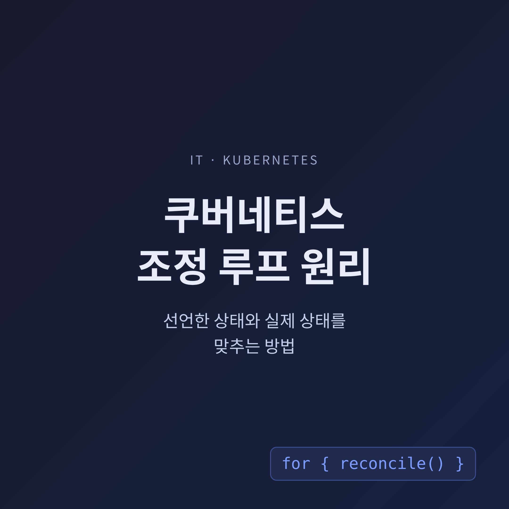
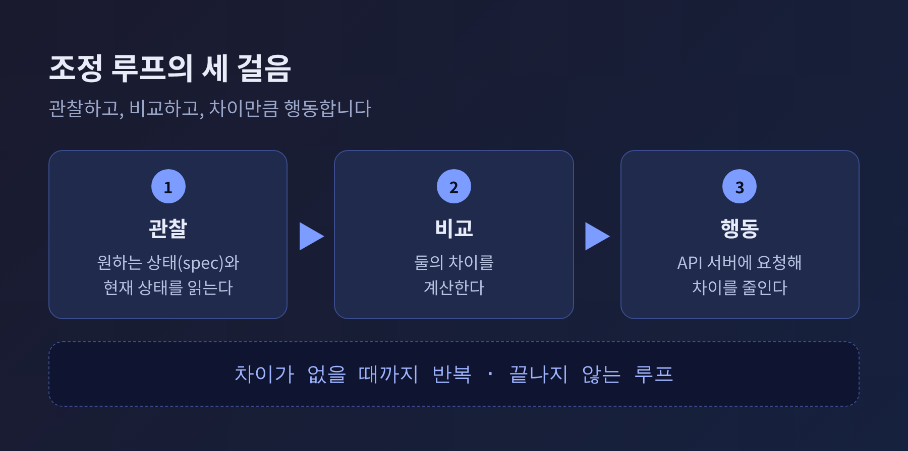
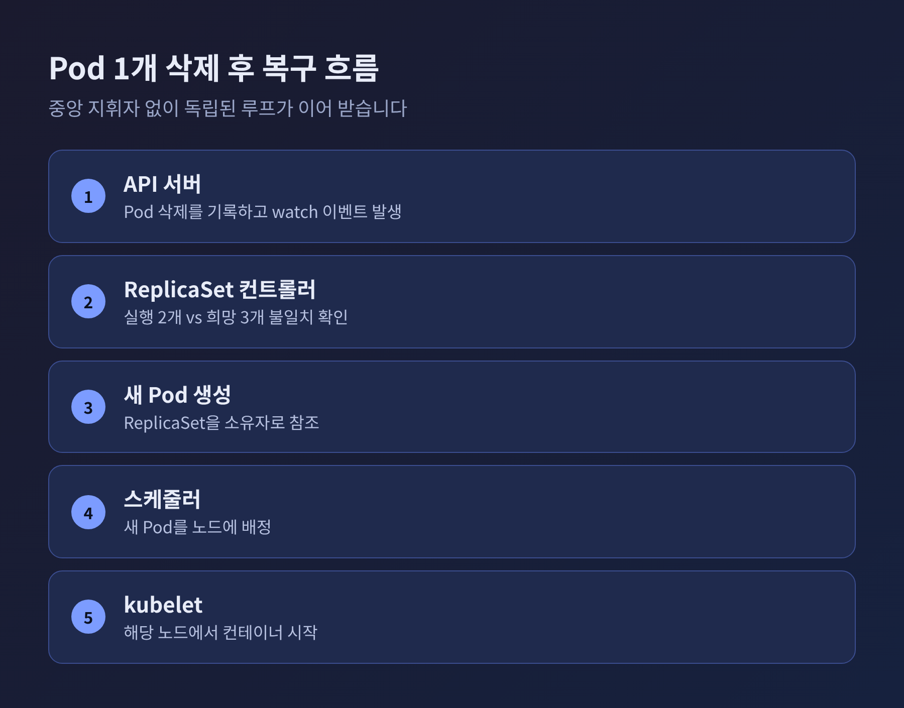
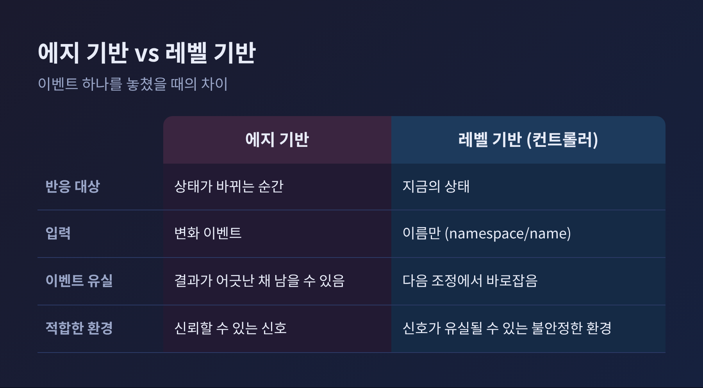
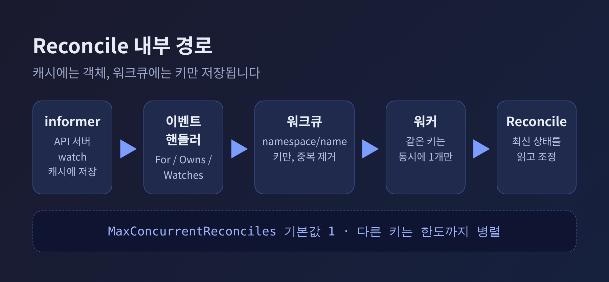
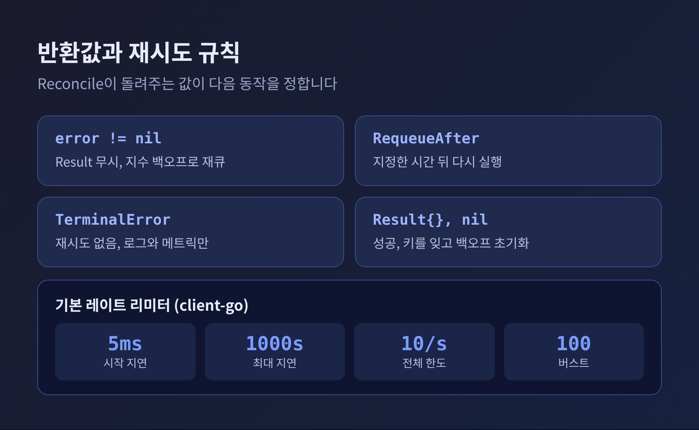

오늘은 쿠버네티스 컨트롤러가 일하는 방식, 곧 조정 루프(reconcile loop)에 대해 이야기해 보려 합니다. 핵심은 한 줄입니다. 컨트롤러는 사용자가 선언한 원하는 상태와 클러스터의 현재 상태를 계속 비교하고, 차이가 있으면 그 차이를 줄이는 일만 합니다. 아래에서 이 루프가 내부에서 어떻게 돌아가는지, 왜 이벤트를 놓쳐도 무너지지 않는지 차례로 정리하겠습니다.
쿠버네티스 공식 문서는 제어 루프를 이렇게 설명합니다. 시스템의 상태를 조절하는, 끝나지 않는 루프입니다. 대표적인 비유가 방의 온도조절기입니다.
온도를 설정하면 그것이 원하는 상태(desired state)입니다. 실제 방 온도는 현재 상태(current state)입니다. 온도조절기는 장비를 켜고 끄며 현재 상태를 원하는 상태에 가깝게 만듭니다.
컨트롤러도 같은 구조입니다. CNCF 블로그의 표현을 빌리면 컨트롤러는 클러스터 상태를 지켜보다가 필요할 때 변경을 가하는 루프입니다. 불일치를 발견하면 API 서버에 요청을 보내 바로잡습니다.
예전에는 서버가 죽으면 사람이 새벽에 일어나 다시 띄웠습니다. 지금은 "Pod 3개를 원한다"고 한 번 선언해 두면 컨트롤러가 그 숫자를 지킵니다. 사람은 절차를 지시하지 않고 결과만 선언합니다. 이것이 선언형(declarative) 방식입니다.

Deployment로 Pod 3개를 띄운 상황을 가정해 보겠습니다. 이 가운데 하나를 직접 지웁니다. 클러스터에는 Pod 2개가 남습니다.
iximiuz Labs의 실습 자료가 정리한 흐름은 다음과 같습니다.
이것은 부활이 아닙니다. 컨트롤러가 현실(2개)과 의도(3개)가 어긋난 것을 알아채고 하나를 만든 것입니다. 이 과정을 총괄하는 중앙 지휘자는 없습니다. etcd라는 하나의 진실 원천을 API 서버를 통해 공유하는 독립된 루프들이 각자 자기 몫만 처리합니다.
여기서 실무 감각 두 가지가 나옵니다. Pod가 다시 살아나는 것이 싫다면 Pod가 아니라 소유자인 Deployment를 지워야 합니다. 관리되는 Pod의 설정을 바꾸고 싶다면 Pod를 직접 고치지 않고 spec의 template을 고쳐야 합니다. 직접 수정한 내용은 되돌려집니다.

컨트롤러가 "내가 관리하는 Pod"를 구분하는 방법이 소유자 참조(ownerReferences)입니다. 쿠버네티스 공식 문서에 따르면 ReplicaSet은 Pod 집합의 소유자이고, 소유되는 쪽을 dependent라고 부릅니다. 이 관계는 레이블과 셀렉터와는 다른 개념입니다.
Pod는 ReplicaSet을, ReplicaSet은 Deployment를 가리킵니다. 그래서 Deployment를 지우면 가비지 컬렉션이 하위 객체를 연쇄로 정리합니다. 소유자 참조는 각 컨트롤러가 자기 소유가 아닌 객체를 건드리지 않게 하는 안전장치이기도 합니다. 대부분은 쿠버네티스가 자동으로 관리합니다.
삭제할 때 정리해야 할 일이 있는 경우에는 finalizer를 씁니다. 공식 문서의 설명대로 finalizer는 삭제 표시된 리소스를 완전히 지우기 전에 특정 조건이 충족될 때까지 기다리게 하는 키입니다. 컨트롤러에게 삭제된 객체가 소유하던 리소스를 정리하라고 알리는 역할도 합니다. 삭제 역시 조정의 한 장면인 셈입니다.
조정 루프를 이해하는 데 가장 중요한 개념이 레벨 기반(level-based) 동작입니다. controller-runtime 문서는 조정이 레벨 기반이며 개별 이벤트로 동작이 결정되지 않는다고 명시합니다.
Red Hat의 설명으로 풀면 이렇습니다. 에지 기반은 상태가 바뀌는 순간에 반응합니다. 레벨 기반은 지금 어떤 상태인지에 반응합니다. 레벨 기반은 신호가 유실될 수 있는 복잡하고 불안정한 환경에 더 적합합니다.
그 증거가 Reconcile 함수에 전달되는 Request입니다. 여기에는 네임스페이스와 이름만 들어 있습니다. 어떤 이벤트가 있었는지도, 객체의 내용도 담기지 않습니다. 그래서 Pod가 이미 삭제된 경우에도 컨트롤러는 "지금 클러스터에 무엇이 있는가"를 직접 읽어 판단해야 합니다.
예전엔 "삭제 이벤트를 받으면 하나 만든다"는 식의 사고가 자연스러웠습니다. 지금의 방식은 "있어야 할 개수와 있는 개수를 센다"입니다. 이벤트를 하나 놓쳐도, 컨트롤러가 재시작되어도, 네트워크가 끊겼다 돌아와도 다음 조정에서 같은 결론에 도달합니다. 같은 이유로 Reconcile은 멱등(idempotent)하게 작성해야 합니다. 같은 원하는 상태에 대해 여러 번 실행될 수 있기 때문입니다.

GoLinuxCloud가 정리한 구조를 따라가 보겠습니다.
먼저 informer가 API 서버를 watch하면서 객체를 메모리 캐시에 저장합니다. 이벤트 핸들러는 대상이 되는 객체의 키(namespace/name)만 워크큐에 넣습니다. 캐시에는 객체가, 워크큐에는 키만 저장되는 구조입니다. 주 리소스는 For, 자식 리소스는 Owns, 그 밖의 객체는 Watches로 지정합니다.
같은 객체에 대한 여러 번의 변경은 워크큐에서 하나로 합쳐집니다. client-go의 workqueue 문서도 처리 전에 여러 번 추가된 항목은 한 번만 처리된다고 설명합니다. 동시에 같은 항목을 두 워커가 처리하지도 않습니다. 처리 도중 다시 추가된 항목은 이후에 다시 처리됩니다.
워커는 원래의 이벤트가 아니라 캐시에 있는 최신 상태를 읽습니다. 같은 키는 한 번에 하나의 고루틴에서만 실행되고, 서로 다른 키는 MaxConcurrentReconciles 한도까지 병렬로 처리됩니다. 이 값의 기본은 1입니다.
변화가 없어도 조정이 도는 경우가 있습니다. 해당 글에 따르면 controller-runtime의 informer 재동기화 기본값은 10시간입니다. 다만 이 수치는 이 글에서 단일 출처로만 확인했으므로 참고용으로만 받아들이시길 권합니다.

Reconcile은 Result와 error를 돌려줍니다. 이 반환값이 다음 동작을 정합니다. controller-runtime 문서와 GoLinuxCloud의 설명을 합치면 이렇습니다.
백오프의 기본값은 client-go 소스에서 확인됩니다. 항목별 지연은 5밀리초에서 시작해 두 배씩 늘어나며 최대 1000초에서 멈춥니다. 여기에 전체 재시도 속도 제한이 겹칩니다. 초당 10건, 버스트 100입니다. 실패가 반복되어도 API 서버를 몰아붙이지 않도록 한 장치입니다.
Kubebuilder의 CronJob 튜토리얼은 좋은 사례를 보여줍니다. 대상 객체를 찾지 못하면 빈 Result와 nil을 반환해 조용히 끝냅니다. 읽기 오류는 오류를 반환해 재시도하게 합니다. 스케줄이 잘못된 경우는 Degraded 조건을 기록하고 nil을 반환합니다. 재시도해 봐야 소용없고 spec이 바뀌기를 기다려야 하기 때문입니다. 마지막에는 다음 실행 시각까지를 RequeueAfter로 설정하는데, 튜토리얼은 이것이 최대 기한이라고 설명합니다. 그 전에 Job이 시작되거나 끝나면 더 일찍 조정될 수 있습니다.
같은 튜토리얼은 status가 "세상의 상태로부터 재구성될 수 있어야 한다"고 말합니다. 직전 status에 기대지 말고 매번 관찰한 사실에서 다시 계산하라는 뜻입니다.

조정 루프에도 함정은 있습니다. 가장 흔한 것이 매번 .status를 갱신하는 코드입니다. 자기가 쓴 변경이 다시 이벤트가 되어 조정을 부르고, 그 조정이 또 status를 쓰는 식의 무한 반복이 생길 수 있습니다. 값을 비교해 달라졌을 때만 쓰거나, GenerationChangedPredicate로 이벤트를 걸러야 합니다. 이 경고는 한 곳의 자료에서만 확인한 내용이라 실제 환경에서는 직접 검증이 필요합니다.
또 하나는 시차입니다. 컨트롤러는 캐시를 읽기 때문에 방금 쓴 내용이 곧바로 보이지 않을 수 있습니다. 조정은 즉각적인 명령이 아니라 결국 수렴하는 과정입니다. 이 한계를 받아들이면 설계가 한결 편해집니다.
정리하면 이렇습니다.
조정 루프의 힘은 영리함이 아니라 단순함에서 나옵니다. 이벤트를 기억하지 않고, 지금의 차이만 보고, 한 걸음씩 메웁니다. 실패하면 간격을 늘려 다시 시도합니다.
"컨트롤러는 사건이 아니라 차이에 반응한다."
Pod 하나가 사라졌을 때 누가 지시하지 않았는데도 새 Pod가 올라오는 이유를 궁금해하셨다면, 이제 그 답이 보이실 것입니다. 선언해 둔 숫자를 끝까지 기억하는 루프가 클러스터 안에서 쉬지 않고 돌고 있기 때문입니다.